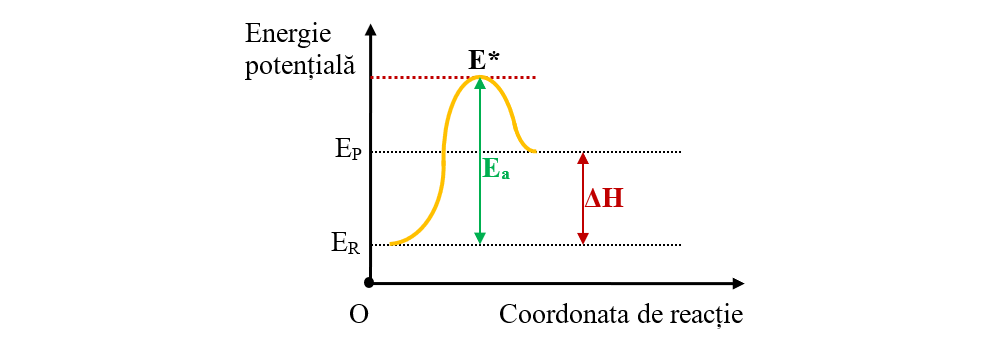

Transformarea reactantilor in produsi de reactie presupune desfacerea
unor legaturi din reactanti (proces endoterm) si formarea noilor legaturi
in produsi (proces exoterm), fapt ce este posibil daca particulele reactante
se ciocnesc intre ele. Nu toate ciocnirile dintre particule duc la formarea
produsilor de reactie.
O concentratie mai mare a reactantilor inseamna un numar mai mare
de particule care se ciocnesc, intrucat numarul acestora va fi mai mare in
unitatea de volum.
Cresterea temperaturii determina un numar mai mare de ciocniri intrucat
creste energia cinetica, particulele se misca mai rapid la temperaturi mai
mari, si, in consecinta, contactul acestora va fi mai frecvent.
Totodata, particulele trebuie sa aiba in momentul ciocnirii o orientare
favorabila - conditia geometrica.
Factorul energetic este determinant pentru producerea unei reactii
chimice. Daca energia cinetica a particulelor care se ciocnesc depaseste
un prag energetic,Ea, numita energie de activare, reactia are loc. Prin
ciocnirea particulelor care indeplinesc atat orientarea geometrica cat si
conditia energetica se formeaza o asociatie temporara, bogata in energie,
numita complex activat (stare de tranzitie).
In timpul ciocnirii, o parte din energia cinetica a particulelor se
transforma in energie potentiala a complexului activat; daca energia
particulelor care se ciocnesc este suficient de mare pentru a determina
ruperea legaturilor existente si formarea noilor legaturi in particulele
produsilor, reactiile chimice se produc. Energia minima a particulelor
pentru a forma complexul activat este cunoscuta sub numele de energie
de activare. Moleculele activate formeaza complexul activat (cu energia
din varful curbei, fig.25). Fiind instabil, complexul activat se descompune
in produsii de reactie; desi complexul activat reprezinta o stare de
tranzitie, se caracterizeaza printr-o serie de proprietati (masa moleculara,
legaturi chimice, unghiuri dintre legaturi s.a.).
Energia de activare
(Ea) a reactiei este egala cu diferenta dintre energia
complexului activat (E*) si energia reactantilor (ER)(fig.25).
Ea = E* - ER
Analizand diagrama (fig.25) se observa ca entalpia de reactie, ΔH,
este independenta de viteza de reactie si de energia de activare. Dupa
cum ai aflat in capitolul precedent, variatia de entalpie ΔH depinde numai
de energia reactantilor si cea a produsilor, variatia acestora fiind data de
expresia
ΔH = HP - Hr .
Sa analizam diagrama energetica a unui proces biochimic -
oxidarea glucozei - despre care ai aflat in capitolul anterior, referitor la notiuni
de termochimie.
Dupa cum se stie, glucoza arde in oxigen si cedeaza energie:
C6H12O6 + 6O2 → 6CO2 + 6H2O + Q
Urmarind diagrama energetica de la stanga la dreapta se observa
ca are loc o reactie exoterma in care reactantii cu energie mai mare (C6H12O6
si O2) se transforma in produsi (CO2 si H2O) cu energie mai mica; astfel
are loc oxidarea glucozei, cu degajare de energie. Cand analizam diagrama
invers, este vorba despre o reactie endoterma , reactie numita fotosinteza,
prin care se formeaza glucoza din CO2, H2O si energie solara.
Prin urmare, energia de activare a procesului de fotosinteza este mai
mare decat energia de activare a metabolismului (oxidarii) glucozei.
